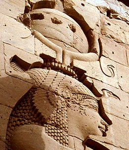
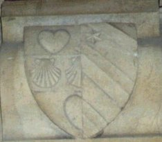
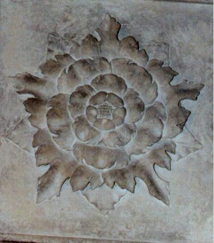
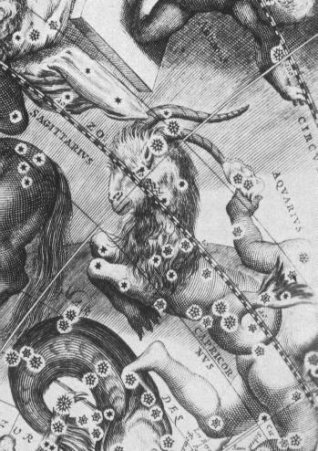
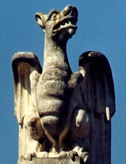
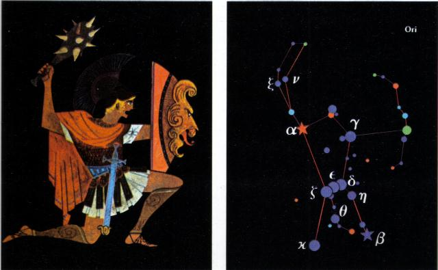
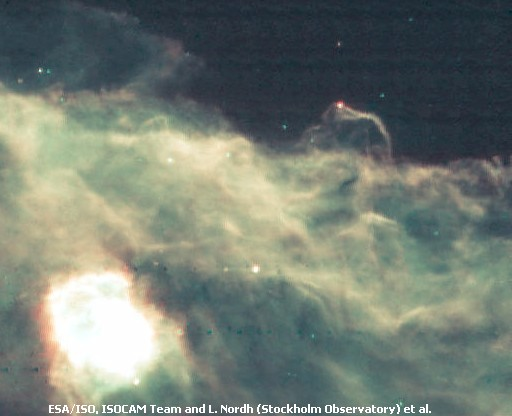
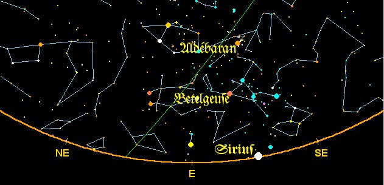
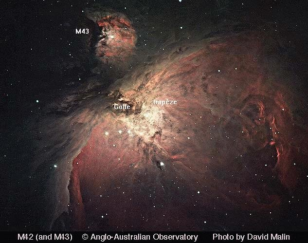

EMBLEMA XLIII.
revu le 29 août 2002
Audi loquacem vulturem, qui neutiquam te decipit.
(Prête l’oreille au vautour qui parle : il ne te trompe nullement.1)Occupant le sommet d’une haute montagne
Un vautour2 crie sans cesse : On me dit noir et blanc ;
Je suis encore jaune et rouge et ne mens pas.
C’est aussi le corbeau qui sait voler sans ailes
Dans la nuit ténébreuse aussi bien qu’en plein jour.
L’un ou l’autre sera la tête de ton œuvre.3Nous entendons tous les jours parler ici et là d’oiseaux dotés de la parole ou rivalisant avec la voix humaine, perroquets, corbeaux, choucas, pies. Ainsi Pline écrit qu’à son époque, lorsqu’il publia son Histoire, Agrippine, femme de l’empereur Claude, possédait une grive qui imitait les paroles des hommes. Les jeunes Césars avaient de leur côté un étourneau et des rossignols exercés aux langues latine et grecque, qui disaient continuellement des choses nouvelles et prononçaient même de longues files de mots. Il n’est pas rare de rencontrer des oiseaux de ce genre et ils paraissent maintenant moins dignes d’admiration, étant donné que l’entraînement et l’exercice peuvent faire parler et bavarder tous les oiseaux dotés d’une langue assez large. Pourtant ce vautour dont les philosophes font mention n’a pas appris en s’exerçant les paroles qu’il peut lui arriver de proférer, mais sa propre nature les exprime tacitement. Les philosophes disent qu’il crie sans cesse et proclame d’une voix forte qui et quel il est4. Il imite en cela les grands princes qui tiennent toujours à déclarer leurs titres et leur lignée au début de leurs proclamations, non par quelque trait d’orgueil, mais à cause des autres. Ils font ainsi savoir à tous l’autorité en vertu de laquelle ils gouvernent et le droit d’hérédité qu’ils revendiquent.
De même il est important de connaître les couleurs, marques, en quelque sorte, de ses armes et de ses titres, dont jouit l’oiseau philosophique, et par lesquelles il surpasse tous les autres.« Je suis, dit-il, selon le Rosaire qui cite Hermès, le noir du blanc et le jaune du rouge, et assurément je suis véridique et non menteur. »
II se déclare noir, blanc, jaune et rouge, et il l’est véritablement, car bien qu’il ne possède pas encore les trois dernières couleurs d’une façon actuelle, il en attend l’héritage5. C’est pourquoi Rosinus déclare au Livre des Interprétations divines :
« Prends la pierre qui est noire, blanche, rouge, jaune, l’oiseau merveilleux qui vole sans ailes dans la noirceur de la nuit et dans la clarté du jour. Car de l’amertume qui est dans sa bouche on tire une coloration, et de son sang on tire une eau pure, comme le dit Alexandre : " Prends la Pierre de quatre couleurs, mon fils. " ».
Les livres des philosophes répètent à satiété que toutes ces couleurs, qui sont les principales, se trouvent dans la pierre en ordre successif. Il ne sera pas hors de propos de dire pourquoi le sujet philosophique est appelé vautour. Parmi les vautours, ceux qui dominent sont les noirs, mais leur vol est lent à cause de la masse de leur corps. On dit que cet oiseau conçoit sans semence mâle et sans union, et que ses petits vivent longtemps, jusqu’à la centième année. Ils font leur nid dans les rochers élevés et personne n’atteint ces nids. Leurs petits sont habituellement au nombre de deux ; ils viennent en aide contre les serpents6. Ils conçoivent de l’Eurus7. Lorsqu’ils ont commencé à produire des œufs, ils apportent du pays indien une sorte de noix possédant à l’intérieur quelque chose qui remue et rend constamment un son. Lorsqu’ils se le sont appliqués ils mettent au monde de nombreux petits, mais un seul demeure, que l’on appelle IMMUSULUS8. Hermodore Fonticus atteste, selon Coelius, que les vautours sont les plus inoffensifs de tous les animaux, car ils ne touchent absolument à rien de ce que les hommes sèment, plantent, cultivent. En outre ils ne tuent aucun animal. Ils épargnent aussi les oiseaux morts, en qui ils reconnaissent d’une certaine façon leurs congénères. C’est pourquoi ils étaient très précieux dans les séances de divination, comme le montrent les origines de la ville de Rome. L’oiseau philosophique manifeste presque toutes les qualités des vautours et c’est donc à bon droit qu’il est appelé vautour par Hermès et les autres, lui dont le vol est lent et la couleur noire. Il conçoit de lui-même. Le Rosaire dit en effet, vers la fin :
« C’est le dragon qui s’épouse lui-même, se féconde lui-même et enfante en son jour, etc. »
Et Rosinus à Sarratanta :
« Et c’est le serpent qui se fait jouir lui-même, se féconde et enfante en un seul jour, etc. »9
Il vit très longtemps et se multiplie. Ce que Virgile écrit de l’oiseau phénix convient également à celui-ci (car c’est le même) :
Le corbeau vainc trois fois le cerf aux pieds ailés ;
Le phénix qui renaît, neuf fois le multiplie.10Atteindre ses nids est chose très difficile. Il lutte avec le serpent mercuriel et le vainc, ce qui s’entend du soleil et de la lune. Il est conçu du vent, est porté dans son ventre et naît dans l’air11. Beaucoup l’appellent simplement pierre aétite possédant en elle un caillou sonore12. On ne trouve qu’un seul immusulus dans le nid philosophique. C’est un oiseau très inoffensif, car il ne fait de mal à personne, est profitable à ceux qui savent et se révèle excellent dans les présages. Mais pourquoi fait-il son nid sur une montagne et pourquoi, s’y étant posé, crie-t-il de la sorte ? Rosinus répond d’après Rhasis et dit :
« Considère les très hautes montagnes qui sont à droite et à gauche et montes-y. C’est là que l’on trouve notre, pierre ; elle est aussi sur une autre montagne qui porte toute espèce de plantes aromatiques, et les esprits ou espèces. »13
Morien :
« Gravissez les hautes montagnes plantées d’arbres car notre pierre s’y trouve et y est cachée. »
Et Hermès :
« Prenez la pierre bénie, broyez et lavez la pierre rouge d’où on l’extrait. On la trouve sur les montagnes, et quelquefois surtout dans les cloaques anciens. »14
Notes1. Ce chapitre revient sur la phase de putréfaction, mais envisagée dans sa solution : la conjonction. Nous en voyons la preuve par le fait de la montagne élevée, lieu où s'opère l'union des principes. Le vautour se tourne vers le Soufre au lieu que le serpent est résolument d'essence mercurielle. Quant à la tromperie dont se défend Maier, elle renvoie au mot doloV : tout objet servant à tromper, et en particulier le cheval de Troie ou le filet d'Héphaïtos. C'est la ruse ou l'artifice dont parle Fulcanelli, qui permet de rendre l'occulte manifeste. Maier a déjà parlé du vautour, indirectement, dans l'Atalanta, XXXVII, quand il a évoqué la fumée blanche. Pernety en dit :
« Sachez, fils de la science, que le vautour crie du haut de la montagne, je suis le blanc du noir ; parce que la blancheur succède à la noirceur. Morien appelle cette blancheur la fumée blanche. Alphidius nous apprend que cette matière ou cette fumée blanche est la racine de l’art, & l’argent-vif des Sages. » [Fables Egyptiennes et Grecques]
2. Artéphius, dans son Livre Secret, dit à peu près la même chose sur cet oiseau volant sans aile. Philalèthe parle aussi d'un oiseau qui à la propriété spéciale de voler sans aile : c'est la colombe [cf. Introïtus, VI]. Ces colombes, comme le vautour, évoquent le mythe d'Eros [Introïtus, VI]. Il faut comprendre que les colombes constituent les Soufres sublimés dans l'AIR des Sages qui sont alors comme les pierres que l'on trouve dans l'AIR, dans l'Atalanta, XXXVI. On peut voir aussi dans le vautour une préfiguration du Phénix, ainsi que semble le dire Lavinius :
« Il naît de moi un Oiseau admirable, qui de ses os, qui sont mes os, se fait un petit nid, où, volant sans ailes, il se revivifie en mourant, et l'Art surpassant les lois de la Nature, il est à la fin changé en un Roi, qui surpasse infiniment en vertu les six autres. » [Traité du Ciel Terrestre]
On finit par comprendre que la matière, dans le vase de nature, passe par une succession de phases où on l'a fait tour à tour corbeau, vautour et enfin, aigle, ce dernier en rapport immédiat avec le lion. Salomon Trismosin tient aussi que l'oiseau volant sans aile soit une sorte de corbeau :
« Le grand Rosaire tient cette opinion de tant de bons auteurs très assurée, la soutenant comme infaillible par cette figure métaphorique : " Nous tenons pour maxime véritable, que la tête de notre Art est un corbeau volant sans ailes en l'obscurité de la nuit aussi bien qu'en la clarté du jour. " » [Toyson d'or]
Dans le Donum Dei, nous avons approfondi ce point de doctrine.
3. Le vautour était, dans les traditions gréco-romaines, un oiseau divinatoire, consacré à Apollon, comme le cygne ou le corbeau, outre qu'il était aussi consacré à la déesse Isis et à Junon. En ce sens, divinatoire, c'est dire par là qu'il s'agit d'un agent régénérateur des forces vitales [c'est-à-dire des âmes] qui sont contenues dans le Mercure en son premier état. Ce n'est donc point un hasard si le vautour est associé dans la symbolique cosmologique, aux signes d'EAU [et nous ajouterions d'AIR]. Au vrai, cet oiseau est dans l'oeuvre le premier possesseur du FEU [entendu comme notre rayon igné solaire] et on le trouve dans cette partie, souvent opposé au crapaud [voyez en particulier AtalantaV, XXXVI, XXXIX là-dessus]. C'est assez dire que cet oiseau a le singulier pouvoir de transformer les immondices, les résidus en or philosophal. Cette transmutation, au reste, du vautour en crapaud résulte de son irruption dans la sagesse divine, ou pour être plus précis, il est purifié, brûlé par les épreuves d'albification [« Dealbate Latonam et rumpire libros », écrit Basile Valentin]. Il revêt alors les apparences de l'innocence, c'est-à-dire de la folie, ce qui a fait écrire à Fulcanelli que le « Mercure est notre mère folle » [DM, I, p. 422]. D'ailleurs cela poursuit la correspondance entre le vautour et Eros [fils de la Nuit et d'Erèbe ; mais on le dit aussi fils de Vénus. Rappelons les rapports singuliers que les alchimistes rapportent entre Vénus - Lucifer - et Saturne]. On prétend même que le vautour est associé à la parturition et qu'il faut le prendre pour symbole de fertilité et d'abondance, à l'image de la corne d'Amalthée [la déesse vautou égyptienne, Nekhbet, est la protectrice des naissances]. Nous passerons sur son assimilation à Isis, sur laquelle nous nous sommes étendus ailleurs, de même que sur l'assonance entre son nom grec guj et le gypse, gujoV. Ajoutons, pour revenir à l'Atalanta XLII et à l'âne, que le vautour est encore assimilé à des paniers ou corbeilles, symbolisant la germination dans le vase de nature.

FIGURE I
(temple de Philae, Isis, lune, aspic, vautour)La figure I montre un admirable relief d'Isis, au temple de Philae, près d'Assouan. La déesse est représentée assise sur son trône, de profil, le crâne enveloppé comme d'un casque par les ailes tombantes d'un grand oiseau, d'où se détachent une tête et une queue de vautour, casque surmonté d'un globe lunaire qu'encadrent comme une lyre deux cornes de vache. Nous trouvons là un compendium du dispositif mercuriel qui préfigure, qui présage littéralement de la parturition prochaine, par laquelle se signalera le passage du soleil dans le signe de la Vierge. En effet, Isis montre encore un sein découvert, gonflé, prêt à allaiter.
Comme dit plus haut, il faut se garder de confondre le vautour avec l'aigle, voire le faucon. Certes, ce sont des oiseaux de proie [arpagh]. Mais il faut l'entendre au sens figuré ; arpagh a le sens de « rapacité et avidité » qui exprime une idée d'emprise et depillage, mais dans une autre acception signifie « croc pour tirer un seau d'un puits ou râteau ». Ce sens nous paraît, en effet, plus conforme à la doctrine hermétique et exprime l'idée de l'instrument aratoire [arow] qui permet à l'Artiste de préparer sa terre feuillée. Le puits, ici, a son importance, pour des raisons exposées ailleurs [Philosophia Reformata, Atalanta, XXXV]. Le vautour, au, total, est le symbole qui permet d'exprimer la manière dont on puise de l'obscurité de la mort les principes de l'oeuvre, désormais conjugués. Cette manière exige un tour de main, qui consiste à puiser de l'eau [kadoV] du vase de nature, les enfants de Latone. Manoeuvre qui, auparavant, aura exigé qu'on ait pris grand soin des corps, en leur rendant les derniers devoirs [khdoV], lors de l'éclipse totale de soleil et de lune. Nul doute que le vautour ne constitue cette udria dont l'Artiste à besoin, c'est-à-dire l'urne [le vase de nature] où sont déposées les cendres des métaux morts. Souvent confondu en mythologie avec le Soleil, et assimilé en raison de sa puissance et de sa rapidité à un messager ou à un guerrier céleste, l'oiseau divin apparaît particulièrement aimé d'Hercule [Fontenay]. Ce guerrier augure de la victoire d'une bataille [Plutarque] et un commentateur d'Aristote cite le cas de vautours qui, ayant volé plus de soixante heures, arrivèrent au lendemain d'une bataille [il est vrai qu'ils ont pu être attirés par l'odeur du sang des cadavres. En effet, selon Pline, cet amateur de cadavres sent la mort d'un homme trois jours à l'avance. Les savants du XVIe siècle expliquèrent cette faculté de sentir la mort par le fait que le vautour a un « cerveau très sec, les odeurs y arrivant facilement, non détruites par les vapeurs humides comme chez les autres animaux ; cela leur permet d'arriver de 166 lieues pour dévorer les corps ». Cette explication alambiquée ne convaincra pas un cartésien mais ravira l'étudiant en hermétisme : quoi de plus naturel pour lui d'évoquer un cerveau sec - voyez l'Atalanta XXXII sur le corail et ses rapports avec le cerveau de Jupiter d'où l'on extrait par le FEU, Pallas-Athéna, symbole du Soufre]. De façon générale, quoi qu'il en soit, le vautour semble augurer des présages d'une guerre [dans le petit monde des alchimistes, c'est de la lutte du fixe et du volatil qu'il s'agit, lutte qui doit aboutir à l'union radicale des principes, laquelle opération survient au sommet des montagnes]. On attribue aux viscères du vautour, là encore, des propriétés qui ne peuvent s'expliquer que par les arcanes hermétiques : la « pierre de vautour » qui se trouve dans le cerveau de l'oiseau passe pour guérir les maladies de l'esprit [Albert Le Grand] ; en Espagne, l'oeil d'un vautour, attrapé dans son nid pendant la pleine lune, remédie à la cécité [comprenez : l'occulte devient manifeste au plus fort de la tempête de l'eau permanente, manifestée par les couleurs de la queue de paon, animal consacré à Junon, la déesse qui est implorée par les femmes en couche, en l'ocurrence Latone, poursuivie par la foudre d'Héra]. Poursuivons : le coeur de l'oiseau si on lui ajoute un poil de lion ou de loup, éloigne les démons [le lion rouge est le Mercure préparé et animé, selon ce que nous en avons dit au signe des Gémeaux]. Seul, il fait fuir les serpents, propriété que Pline attribuait à son plumage au moment où on le faisait brûler, ce que l'on veut bien croire, pris avec un grain de sel [l'opération par laquelle on blanchit Latone, où les plumes du vautour blanchissent et où, par là-même, le Mercure éprouve du retrait devant la prochaine réincrudation des Soufres].
4. Le vautour pourrait à bon droit soutenir qu'il est Eros. Comment peut-on ainsi mettre en parallèle cet oiseau peu avenant avec l'Eros grec, qui a hérité d'aphrodite, sa mère, l'amour, le charme dans la grâce ? C'est parce que son pouvoir s'étend aux minéraux aux fluides et aux liquides, c'est-à-dire à tout ce qui annonce la vertu attractive, en aidant le mariage des parties contraires que constituent nos deux natures métalliques. En somme Eros exprime une force primordiale qui domine dans le vase de nature des alchimistes et qui annonce la naissance des immortels et l'incarnation de l'âme dans le corps. Ce n'est rien d'autre qu'exprime, notons-le bien, le symbolisme du vautour. Il faut donc éviter de confondre Eros à Cupidon en dépit du fait que les artistes l'aient représenté - conformément à la doctrine hermétique - comme un jeune homme aîlé perçant de ses flèches le coeur des hommes et allumant dans leurs âmes le flambeau de la passion. [parabole sur l'accrétion des Soufres par le moyen du Mercure]. Ce processus complexe de cristallisation nécessite trois ingrédients : l'âme, l'eau bénite, et enfin, l'étoile. Nous trouvons ces matières réunies dans un blason du Palais Jacques-Coeur, à Bourges.

FIGURE II
(Bourges, intérieur du Palais Jacques-Coeur, détail - cliché Alain Mauranne)Pour comprendre précisément la signification exotérique que l'on peut exprimer à partir de ces trois symboles, a priori ésotériques, il faut que le lecteur se soit imprégné de notre section du Mercure de Nature et de certains chapitres ayant trait aux Mémoires de Gabriel-Auguste Daubrée. Au préalable, nous rappellerons ces extraits de Fulcanelli :
« Il est évident [...] que fut longtemps submergée une partie importante du sol français, recouverte de sable marin, abondamment pourvue de coquillages, de calcaires aux empreintes d'ammonites. » [Demeures Philosophales, t. II, p. 342, le Déluge]
A mettre en parallèle avec cet autre extrait :
« Nicolas Grosparmy, Adepte normand du XVe siècle, donne une figure de l'ustensile sphérique, tubulé latéralement, et qu'on appelle de même matrice. Le X traduit aussi l'ammoniac des sages, ou sel d'Ammon (ammwn, c'est-à-dire du Bélier, que l'on écrivait jadis avec plus de vérité harmoniac, parce qu'il réalise l'harmonie (armonia, assemblage), l'accord de l'eau et feu, qu'il est le médiateur par excellence entre le ciel et la terre, l'esprit et le corps, le volatil et le fixe. C'est encore le Signe, sans autre qualificatifon, du sceau qui révèle à l'homme, par certains linéamentssuperficiels, les vertus intrinsèques de la prime substance philosophale. Enfin, le X est l'hiéroglyphe grec du verre, matière pure entre toutes, nous assurent les maîtres de l'art, et celle qui approche le plus de la perfection. » [Demeures Philosophales, I, p. 360, Louis d'Estissac]
On a constaté en géologie qu'il existait des massifs granitiques d'âge postérieur aux formations appelées lias et craie, par exemple, dans les Pyrénées-Orientales, et que ces roches fossilifères sont fortement altérées dans leur texture, et souvent imprégnées de minerai de fer au vosinage du granit. Ainsi, le calcaire crayeux [de la craie : leukh] devient plus cristallin et saccharoïde à mesure qu'il s'approche du granit, et il perd toutes traces des fossiles qu'il contenait d'abord en abondance ; sur quelques points aussi, ce calcaire devient dolomitique [de Dolomieu, cf. mercure de nature] et se montre tout pénétré de petites veines de carbonate de fer, ou tacheté de minerai rouge du même métal [fer oligiste, que les alchimistes appellent l'oxyde rouge d'hydrargyre. Cf. 1, 2, 3, 4, 5, 6,]. Le lias [calcaire compact, grossier et dur] apparaît non seulement imprégné d'oxyde de fer, mais chargé de pyrite, de trémolite et de grenat [pierre intermédiaire entre celles surchargées d'éléments mercuriels et les pierres gemmes]. Le point important à saisir est que la nature réalise ici une véritable transmutation [au sens de métamorphisme, c'est-à-dire transformations moléculaires, sans rapport avec les transmutations métalliques, chimériques, qui correspondent à des modifications dans les noyaux atomiques]. Du temps du minéralogiste Lyell, la nature précise de ces transformations [Lyell emploie le mot transmutation] paraissait des plus obscures et des plus douteuses, mais la réalité des faits était là. Des expériences réalisées par Watt avaient fait voir qu'une masse minérale pouvait très bien, sans avaoir à passer par une fusion complète, prendre un nouvel arrangement moléculaire, et acquérir une cristallisation partielle. Il était dès lors facile de comprendre que les traces des coquilles et des débris organiques disparaissaient, et que cette disparition n'était peut-être pas sans rapport avec les concrétions cristallines comme le grenat, mises en évidence à l'abord du granit. De manière générale, Achille Delesse [cf. Mémoire sur le Métamorphisme des roches] a montré que les minéraux du calcaire hypogène variaient suivant le degré de métamorphisme que la rocha avait subi : lorsque la tructure n'est que légèrement cristalline, le talc, la chlorite, la serpentine y dominent [ce sont des minéraux encore fort proches du Mercure qui leur a donné naissance]. Si la texture cristalline est plus prononcée, on remarque dans la masse des grenats. Enfin, dans le cas où la rocha a tout à fait cristallisée, on observe la présence de mica et de feldspath, ce dernier se rapportant surtout aux variétés les plus riches en principe mercuriel. Comme les dépôts calcaires contiennent de l'argile alumineuse, on peut s'attendre à rencontrer des silicates d'alumine dans ces roches et on y trouve de fait de l'alumine pure cristallisée sous la forme de corindon [Delesse, Bulletin de la société Géol. de France, 2° série, t. IX, p. 126, 1851]. Le fait le plus intéressant est le suivant : M. Dana pense que l'acide phosphorique du phosphate de chaux et le fluor du spath-fluor, révélés si souvent par l'analyse dans les calcaires cristallins, dérivent de débris de mollusques et d'autres animaux. Ces sels minéraux constituent les agents minéralisateurs par excellence, ceux qui ont été utilisés, notamment par Jacques-Joseph Ebelmen [1, 2] et par Henri Sainte-Claire Deville [1, 2]. Si, à cela, nous ajoutons les travaux et expériences réalisés par Gabriel-Auguste Daubrée [1,2,3,], il ne fait pas de doute que l'eau suréchauffée, chargée de certains sels minéraux, dont les chlorures d'étain en particulier, a agi à la manière d'un véritable menstrue [le mot est employé par Daubrée, cf. notes annexées au Mémoire] pour féconder les calcaires hypogènes, comme on le voit par exemple, dans le massif du Saint Gothard.
Nous sommes à présent en mesure d'analyser les trois éléments de la figure II.
- le coeur correspond à ces oxydes métalliques qui, projetés dans la masse silicato-alumineuse, y détermine ces effets de couleur qui font toute la beauté et le prix des pierres gemmes ;
- la coquille, ou plutôt, la mérelle, et son test, fournit l'agentqui permet la transmutation [avec les réserves d'usage] des roches du calcaire hypogène, en préparant la terre feuillée sur laquelle agiront l'eau suréchauffée accompagnée des agents de minéralisation ;
- l'étoile représente l'eau étoilée de Fulcanelli [Atalanta, VI]. C'est la même dont parle l'Adepte lorsqu'il examine l'un des caissons du château de Dampierre [caisson n°6, série n°4]. Voici ce qu'il en dit :La lumière brille dans les ténèbres On s'étonnera sans doute que nous prenions pour des flots ce que d'autres pensent être des nuées Mais en étudiant la manière dont le sculpteur représente ailleurs l'eau et les nuages on sera vite convaincu qu'il n'y a point de notre part erreur méprise ou mauvaise foi. Par cette étoile marine cependant l'auteur de l'image ne prétend pas figurer l'astérie commune vulgairement dite étoile de mer. Celle ci ne possède que cinq bras rayonnants tandis que la nôtre est pourvue de six branches distinctes Nous devons donc voir ici l'indication d'une eau étoilée, laquelle
n'est autre que notre mercure préparé, notre Vierge mère et son symbole Stella maris, mercure obtenu sous forme d'eau métallique, blanche et brillante, que les philosophes dénomment encore astre (du grec asthr, brillant éclatant). Ainsi le travail de l'art rend manifeste et extérieur ce qui auparavant se trouvait diffus dans la masse ténébreuse grossière et vile du sujet primitif. De l'obscur chaos il fait jaillir la lumière après l'avoir rassemblée et cette lumière brille désormais dans les ténèbres de mêmequ'une étoile au ciel nocturne. Tous les chimistes ont connu et connaissent ce sujet quoique fort peu savent en extraire la quintessence radiante si fortement enfouie dans la terrestreité et l'opacité du corps. [Demeures Philosophales, II, p. 113, le Grimoire du Château de Dampierre]
FIGURE III
(Maris stella, plafond de la chapelle de l'hôtel Lallemant, Bourges - cliché Alain Mauranne)Cette étoile a fait l'objet de nombreux détails d'iconographie qui dépassent évidemment le seul cadre alchimique ou hermétique. Toutefois, on en rencontre un beau spécimen sur l'un des caisssons de la chapelle de l'Hôtel Lallemant, à Bourges. Cette étoile, de fait, semble s'approcher davantage, par ses ondes, de l'aspect de l'eau mercurielle à cette époque du travail [envisagé cette fois-ci comme un véritable accouchement]. L'art et la manière d'arriver à cet état a été exposée par E. Canseliet, dans la Toison d'Or [in Etudes Alchimiques, Pauvert, 1964, 1978] :
« Or, il y avait dans un bois de la rive gauche du Rhône, un dragon dont la gueule était garnie de dents énormes et qui s'attaquait à tous les voyageurs. Bien qu'il frappât de mort tout ce qui le touchait, Marthe entra dans le fourré, affronta le monstre et, l'aspergeant d'eau bénite, lui présenta la croix. Le dragon devint alors doux comme un agneau, se laissa attacher, et le peuple vint le tuer à coups de lance. » [d'après la Légende Dorée de Jacques de Voragine]
Cette parabole est identique à bien d'autres où l'on voit le chevalier terrassant le dragon, Cyliani abbattre le monstre, Cadmos tuant le serpent Python, etc. Le symbolisme de l'eau bénite ne posera guère de problème de compréhension à celui qui aura rapproché la mérelle et l'étoile ; de même celui de l'agneau à qui aura compris que le coeur est la semence de l'Or, l'agneau en étant la toison, c'est-à-dire la résine. Et que c'est par ce moyen que l'on fixe l'or en terre, définition de l'or enté [1, 2,]. La lance est le seul symbole qui posera des problèmes à l'étudiant : qu'il y voit le pilum romain ; en consultant l'Atalanta, XLII, il trouvera toute précision nécessaire et comprendra pourquoi la lance de Longin est l'instrument requis [ce n'est pas du sang mais de l'eau qui sort de la poitrine du Christ].
5. Il faut à présent examiner dans le détail cette eau benoîte ou eau bénite, encore appelée eau céleste, se déversant d'une certaine région du ciel. C'est le dixième signe du zodiaque, le Capricorne, qui retiendra notre attention. A cette époque de l'année, où le soleil aborde la constellation [dans le zodiaque tropical], nous sommes au solstice d'hiver. Appelée la porte des dieux, c'est le temps où la nature arrête son mouvement ; arrêt virtuel car il correspond à sa plénitude spirituelle, du moins envisagée sous le point de vue alchimique. Le Capricorne est, en effet, le symbole d'un début de nouveau cycle. C'est là que, par tradition, les textes disent que l'Artiste doit user de patience [45 occurrences, recherche], de persévérance [3 acceptions = karteria : force d'âme, assimilable à la patience, fermeté ou constance ; epimonh : permanence, se rapportant à la longueur de la coction et surtout la dégression progressive de la température ; liparoV : persistant, tenace, avec l'idée de fixité. Renvoie à liparia : graisse, épithète habituel du Soufre ainsi qu'à lipara : gras, onctueux ou brillant d'huile. A aussi le sens de visqueux, gluant, épithètes du Mercure préparé et animé, et par lipasmoV, celui de fumer une terre.] et surtout, de prudence [jronimoV, avec le sens d'oiseaux qui donnent des présages, dont le vautour fait assurément partie]. Et cette patience a même été évaluée par les alchimistes à XL jours. Sur la persévérence, c'est Salomon Trismosin qui donne les indications les plus charitables :« Aussi l'honneur prenant plaisir à cette vive poursuite, les conduit par la main après maintes traverses et ne les quitte point qu'ils ne soient arrivés au haut du monde de leurs félicités pour triompher heureusement de la fertile moisson et des labeurs ensemencés dans le terroir de leur persévérance, qui vient enfin à bout des palmes glorieuses. » [Toyson d'Or, conclusion]
Nous laissons au lecteur le soin d'extraire l'exotérisme de cette phrase, au demeurant peu voilée. Bernard Le Trévisan écrit également que :
« C'est la cause pourquoi de nouveaux Corps y sont mis, et ils sont fixes, afin que le Feu composé, qui est appelé Mercure sublimé, ou première Matière, soit tellement informé du Ferment propre, qu'il obtienne la force de longue persévérance dans la bataille du Feu, malgré sa grande âpreté. » [Verbum dimissum]
Bernard nous permet de rectifier un point de cabale touchant à la matière de l'oeuvre. Car les alchimistes ont rivalisé d'astuces et de perfidie quand ils ont nommé et numérotés leurs matières. Aussi ont-ils confondus la matière première avec la première matière, pour rester simple. Il est clair que par première matière, Trévisan entend le Mercure déjà préparé, c'est-à-dire les Soufres aiguisés du Mercure [qu'on appelle le « vinaigre très aigre »]. Tout cela est important à préciser avant l'examen des décans du Capricorne, qui n'est pas cet Hadès primordial où les Adeptes voient les métaux se consumer jusqu'à volatilisation totale. Est-il besoin de le dire, la constellation est placée sous la domination de Saturne, le premier Mercure ou maître de la dissolution. C'est l'un des trois signes de TERRE avec le Taureau et la Vierge. C'est d'une terre bien sûr hivernale qu'il s'agit, mais d'un hiver où la glace doit brûler : on doit donc, par l'imagination, se persuader que si ce feu est assimilé à la glace, c'est peut-être parce que les soufres qui y sont sublimés retiennent toute la chaleur de ce FEU, sans quoi les alchimistes ne pourraient jamais préparer le rayon igné solaire dont ils ont besoin. Le Capricorne est le lieu d'exil traditionnel de la Lune, celui de la chute de Jupiter et Mars s'y trouve en exaltation. Ce dernier point est notable parce qu'il explique en quoi le Mercure est pontique : mais Arès, ici, n'est pas muni d'une épée d'acide au sens chimique du terme, mais plutôt au sens physique, qu'il faut entendre comme un glaive de feu. La constellation du Capricorne est connue depuis la plus haute antiquité. Eudoxe la cite au IVe siècle avant J.-C mais les Chaldéens [c'est-à-dire, selon Cicéron, les astrologues] en parlaient déjà et y voyaient une chèvre. Les Anciens ont considéré le Capricorne comme porteur d'influx bénéfiques ; nous avons vu que les astrologues modernes sont d'un avis plus réservé. Quoi qu'il en soit, deux de se sétoiles occidentales, a et b, avaient chez les Arabes le nom rassurant de Bonne Etoile du guerrier. Et ses deux étoiles d et g, à l'est, étaient considérées comme les Porteuses de bonnes nouvelles. Dans un sens hermétique, il est certain que les Anciens avaient des clefs pour interpréter le ciel et ses présages que les Modernes ont perdu.

FIGURE IV
(le Capricorne, détail d'une planche de l'Harmonia macrocosmica de M. Cellarius, 1660, Amsterdam)- le premier décan : l'image représente un animal fabuleux, il a une tête de bouc et son corps est motié chèvre, moitié poisson. L'animal révèle l'ambivalence habituelle du Mercure, à la fois tourné vers l'EAU et vers les montagnes, c'est-à-dire vers l'AIR, avec une idée de terre haute ou sublimée. C'est dans ce signe que se manifestent le plus, les contraires, là où les extrémités du vaisseau de nature doivent être conjointes. Doit-on affirmer que ce décan ne prédispose pas l'âme à être quiète ? Que l'esprit est marqué par la ponticité [c'est-à-dire des rêveries lugubres, des songes utopiques] ? Mais, en même temps, ce décan est un facteur de longévité et de continuité. En grec, aigokerwV, aux cornes de chèvre. Nous passerons rapidement sur cette partie de chèvre, en notant bien qu'il s'agit là du corps du Capricorne. A cet égard, voyez l'Atalanta, VII, qui présente la même montagne que le l'emblème XLIII, mais avec un nid d'oisillons [cf. De Lapide Philosophorum, douzième image]. Le bouc a une signifiance à la fois lunaire et nocturne [on s'étonne que ce signe soit le lieu d'exil de la Lune, sauf à la considérer dans son dernier quartier où elle symbolise le Soufre blanc] et c'est cela qui le distingue principalement du Bélier, diurne et solaire [exaltation du Soleil]. Mais c'est cela aussi qui explique qu'il soit le lieu d'exaltation de Mars, ou plutôt d'Arès, le principe de ponticité. En grec, tragoV, ce nom même en affirme la tournure nocturne, puisqu'il a donné le mot tragédie [tragikoV], ce qui est, certes, le cas pour le magistère pris à ce stade : c'est la dissolution totale, la mise au tombeau des corps, la putréfaction. Comment, dans ces conditions, croire en la résurrection ? Or, chose singulière ! Alors que l'athée se refuse à admettre pour vrai le retour des morts, l'alchimiste au contraire, attend cette noirceur totale qui représente pour lui la solution, et la clef, de la conjonction. Il y a plus : cet animal était immolé aux fêtes de Bacchus, autre épithète de Mercure pour certains exégètes comme Dom Pernety. La brièveté du chapitre consacré à l'animal nous permet de l'insérer ici :
CHAPITRE V.Comme on peut voir, rien qui ne nous soit encore inconnu. La phrase mise en italique a d'autant plus d'intérêt qu'elle n'est pas de la plume de Pernety mais de celle d'Eusèbe. Elle est révélatrice de la vérité hermétique ; et cet enfant n'est autre qu'Eros. Nous devons ajouter que Bacchus [Dionysos] a d'autant plus de rapport avec cet animal qu'il s'était métamorphosé en bouc, lorque Typhon avait attaqué l'Olympe et fait fuir les Dieux, pendant que Zeus combattait le monstre. Typhon, engendré par Gaïa, la TERRE primordiale. Typhon encore, qui représente le Mercure en son premier état. Typhon enfin, qui, avant d'être précipté dans les Enfers, engendra quatre monstres qui sont familiers à l'étudiant : Cerbère [13 occurrences], l'hydre de Lerne [12 occurrences], la Chimère [19 occurrences] et le Sphinx [19 occurrences], sans compter les Harpyes [9 occurrences]. Ces quatre monstres ont tous à voir avec le Mercure, car il s'agit d'hybrides, de mosaïques [liqostrotwV : bâti en pierres. En langage vulgaire, c'est-à-dire en géologie, on peut les considérer à l'égales des épigénies métamorphiques. Là encore, le mythe rejoint la nature de superbe manière]. Dionysos s'était enfui, pendant que l'Olympe était attaqué par Typhon, en Egypte [le pays de la terre noire, ou plus exactement du limon noir, limon du Nil, fleuve où Diodore de Sicile a cru voir des aigles dans chacune de ses crues, c'est-à-dire les sublimations de Philalèthe]. quoi qu'il en soit, Dionysos arrivait dans un pays où la chèvre, ou bouc, était adorée par un dieu que les Grecs appelèrent Pan [Pan, le « chèvre-pied » qui hante les montagnes et les champs, qui protège comme Hermès, son père, les troupeaux et les bergers, ce qui nous renvoie à Arès et au Bélier. Ajoutons qu'il provoqua une peur « panique » chez les Perses et les Achéens installèrent sur l'Acropole son culte, exactement au flanc nord-ouest, tandis qu'une course des flambeaux - Atalanta, XLII - fut instituée en son honneur.].
Du Bouc.
Toutes les Nations se sont accordées à regarder le Bouc comme le symbole de la fécondité, il était celui de Pan, ou le principe fécondant de la Nature ; c’est-à-dire, le feu inné, principe de vie & de génération. Les Egyptiens avaient, pour cette raison, consacré le Bouc à Osiris. Eusèbe (De prœp. Ev. 1. 2. c. I.), en nous rapportant un hiéroglyphe Egyptien, nous donne à entendre les idées que ce peuple en avait. Selon l’interprétation qu’il en donne ; mais en faisant un peu d’attention à la description qu’il fait de cet hiéroglyphe, on doit voir dans notre système le sens caché que les Prêtres y attachaient. « Lorsqu’ils veulent, dit-il, représenter la fécondité du Printemps, & l’abondance dont il est la source, ils peignent un enfant assis sur un Bouc, & tourné vers Mercure. » J’y verrais plutôt avec les Prêtres l’analogie du Soleil avec Mercure, & la fécondité dont la matière des Philosophes est le principe dans tout les êtres ; c’est cette matière esprit universel corporifié, principe de végétation, qui devient huile dans l’olive, vin dans le raisin, gomme, résine dans les arbres, &c. Si le soleil par sa chaleur est un principe de végétation, ce n’est qu’en excitant le feu assoupi dans les semences, où il reste comme engourdi jusqu’à ce qu’il soit réveillé & animé par un agent extérieur. C’est ce qui arrive aussi dans les opérations de l’Art Hermétique, ou le mercure Philosophique travaille par son action sur la matière fixe, où est comme en prison ce feu inné ; il le développe en rompant ses liens, & le met en état d’agir, pour conduire l’œuvre à sa perfection, C’est-là cet enfant assis sur le Bouc, & en même temps la raison pourquoi il se tourne vers Mercure. Osiris étant ce feu inné ne diffère pas de Pan ; aussi le Bouc était-il consacré à l’un & à l’autre. C’était aussi un des attributs de Bacchus, par la même raison. [Fables Egyptiennes et Grecques]
Nous rappellerons la célèbre formule EN TO PAN qui figure sur la Chrysopée de Cléopatre. Elle prend le sens de « Un le Tout », littéralement, et désigne expressément le Mercure [1, 2, 3, 4,].- le deuxième décan : l'image représente un rapace ailé qui veille du haut d'un roc

FIGURE V
(Palais des Monnaies, Avignon, détail - cliché alain Mauranne
cliquez sur la figure pour une photo du Palais de la Monnaie)inaccessible, cherchant dans la plaine, de son regard scrutateur et perçant, une proie sans méfiance ou quelques charognes en putréfaction pouvant satisfaire son appétit horrible, victimes faciles de sona vidité et de sa couardise. C'est le décan de la perspicacité, de la solitude et de la tristesse. Nous avons déjà vu quel était le sens véritable à donner au mot rapace [arpagh]. Mais que nous apprend la mythologie sur les rapts célèbres ? Nous avons vu ailleurs celui de Coré-Perséphone perpétré par Hadès [humide radical métallique]. Le mythe a été détaillé également dans la section sur l'église de Saint Grégoire-sur-Vièvre. Celui d'Helène par Paris déclencha la guerre de Troie, c'est-à-dire mit le feu à l'athanor. On peut encore citer la légende de Ganymède. Fils de Tros et de Callirhoé [la famille royale de Troie, cf. Atalanta XXXV.], le jeune Ganymède était réputé pour sa beauté. Zeus en tomba amoureux et se changea en aigle pour le prendre dans ses serres et le ravir dans les cieux. Ayant acquis l'immortalité, Ganymède seconde parfois Hébé dans sa tâche, en versant l'ambroisie [1, 2, 3, 4, 5, 6,] à l'assemblée des dieux. Touchant l'ambroisie, il nous semble que c'est De Nuysement qui a le mieux dévoilé sa nature hermétique :
« Appliquez-vous donc entièrement à ce primitif sujet métallique, à qui la Nature a véritablement donné une forme de métal : mais elle l'a laissé encore cru, non mûr, imparfait et non achevé, dans la molle montagne duquel vous pourrez plus facilement fouir une fosse et tirer d'icelle notre pure Eau pontique que la Fontaine environne, laquelle seule (à l'exclusion de toute autre Eau) est, de sa nature, disposée pour se convertir en pâte avec sa propre farine et avec son ferment solaire et, après, de se cuire en ambroisie. » [Traité du Sel]
On ne saurait être plus clair. En quelques lignes, De Nuysement résume la matière de plusieurs traités sur l'Art. Le primitis sujet métallique est à l'égal de la « matière première » envisagée avec la restriction que nous avons vu supra. La montagne voile un point de cabale qui n'a pas été suffisamment mis en lumière jusque là. En grec, oroV, la montagne est évidemment comme une antenne de Gaïa qui se fraye un chemin jusque vers les régions éthérées. Mais oroV, c'est aussi du petit-lait [Lait de la Vierge, cf. Artéphius, etc.] avec une valeur de liquide séminal [ce qu'est au fond le Mercure préparé, avec cette distinction que l'on y fait végéter une nature minérale au lieu d'une nature animale ; la matrice y est différente]. Enfin, oroV a le sens de limite, envisagée comme celle séparant l'AIR de la TERRE. Un autre mot grec définit le sommet d'une montagne : ogkoV, pris comme masse. Avec aussi le sens de « croc ou crochet d'une flèche ». Voilà qui nous rapproche d'Artémis par le biais des Oréades [OreiadeV], nymphes fréquentant les montagnes, aimant les exercices violents. La liaison entre le rapace, le croc ou crochet, Artémis est du rapport de la capture de ce rayon igné émané de l'AIR [foudre de Zeus] que l'Artiste doit capturer. Le premier stade de cette capture - ou de cette captation - consiste en la conjonction des contraires, que définit l'orichalque ou laiton [oreikalkoV]. Ce Mixte philosophique, sans lequel rien n'est possible dans le magistère naît donc au sommet de la montagne [akrwreia] et constitue, au vrai, l'aurore [akrwria] de l'oeuvre. Dans le même temps, il marque un point de rupture capital [akrwV, limite extrême] dans l'évolution du Mercure qui va perdre sa ponticité élémentaire : c'est comme si on lui coupait les éperons ou, si l'on préfère, les multiples pointes ou javelots qu'on a vus supra. Cela dit, il faut un médiateur pour oeuvrer à ce but : la conjonction des contraires et la rupture du Mercure, qui perd son caractère de « vinaigre très aigre » dont nous parlent tous les textes. Ce médiateur doit occuper les lieux et, autrement dit, il doit vivre dans la montagne [orestiaV]. Précisément, nous allons trouver des qualités parfaites à Oreste [OresthV] pour jouer ce rôle. Sur Oreste, nous avons déjà parlé de ses ossements [Atalanta, XXVII]. Notons d'ailleurs l'allusion au VENT dans l'emblème XXVII [le vent des montagnes se dit en effet orestiaV]. Oreste est, chacun le sait, le fils d'Agamemnon et de Clytemnestre. Voici ce qu'en dit Pernety :
Oreste. Fils d'Agamemnon et de Clytemnestre, quitta la maison paternelle dès le bas âge, pour se soustraire aux embûches qu'Egyste, amant de Clytemnestre, lui tendait, après avoir fait périr son père Agamemnon. Quand Oreste fut parvenu à un certain âge, il fut secrètement retrouver sa sœur Electre, et concertèrent entre eux les moyens de se venger du meurtrier de leur père. Ils prirent si bien leurs mesures, qu'ils firent périr Egyste et Clytemnestre dans le Temple où ils sacrifiaient. Oreste tua ensuite Pyrrhus, fils d'Achille, qui lui avait enlevé Hermione. Il se sentit après cela saisi d'une fureur ou d'une manie qui ne lui donnait presque aucun moment de relâche; de manière qu'il courait les pays errant ça et là comme un vagabond. L'Oracle consulté là-dessus, répondit que pour être délivré de cette fureur, il fallait qu'il se transportât dans la Tauride, et y enlevât la statue de Diane du Temple où elle y était révérée. Il prit avec lui Pylade, son intime ami, qui l'y accompagna. A peine y furent-ils arrivés, qu'ils furent arrêtés et mis en prison, pour être sacrifiés à Diane, que l'on croyait se rendre propice par l'effusion du sang des étrangers. Comme un des deux devait être conservé, et que le sort de mort était tombé sur Oreste, quand on demandait celui-ci pour le sacrifier, Pylade se présentait. Oreste soutenait qu'il était lui-même Oreste. Enfin Thoas, Roi du Pays, fit livrer Oreste entre les mains d'Iphigénie, qui le reconnut pour son frère. Ayant appris le sujet du voyage d'Oreste, elle enleva elle-même la statue de Diane, dont elle était Prêtresse, et ils s'enfuirent avec, après avoir tué Thoas. De retour à Athènes, Oreste y fit les expiations requises pour ses meurtres, et revint dans son bon sens. Il mourut ensuite de la morsure d'un serpent. Voyez l'explication de cette fiction dans les Fables Egyptiennes et Grecques dé-voilées, liv. 3, ch. 14, § 4.On voit qu'Oreste présente des traits mercuriels des plus accusés, et même du premier Mercure, sauvage, à l'image d'Ajax, furieux, prenant le bétail pour des soldats. Oreste n'était qu'un enfant quand Agamemnon fut assasssiné par Clytemnestre et Egisthe. Il put se réfugier [aper] avec l'aide sa soeur Electre chez son oncle Strophios, en Phocide. L'interprétation de cette partie du mythe est simple : comme Artémis et Apollon, comme Amphion et Zéthos, d'autres encore, Electre et Oreste figurent deux des de principes de l'oeuvre. Oreste ne se trouve qu'en un lieu élevé, là où la TERRE côtoie l'AIR et d'où s'écoule de l'EAU qui forme les fleuves-dieu. Electre est déjà un Mixte, comme le précise l'Anonyme d'Huginus à Barma :« Pourquoi donc le soufre du Soleil conjoint par un artifice philosophique avec le mercure de la Lune, ne ferait-il pas l'Electre ? Pourquoi ne ferait-il pas le Cinabre ? Et certes un lion engendre un lion, les gens forts & robustes ont des enfants qui leur ressemblent, & les aigles généreuses ne donnent pas le jour à une faible & timide colombe. » [chap. VIII]
La Phocide [jwkiV] se rapproche par cabale de lieux caverneux où le soleil n'entre point [jwkaV]. Quant à Strophios [StrojioV], Troyen, en l'occurrence le père de Pylade et le roi de Phocide, il représente la ceinture [strojoV] d'Offerus. Nous avons souvent évoqué cette ceinture et conseillons au lecteur de se reporter à ce que nous en disons au sujet d'Orion [Atalanta, XXXVIII]. Un élément manquait toutefois dans l'analyse d'Orion le Chasseur : le baudrier, c'est-à-dire la ceinture.
¯
Ce baudrier se compose de trois étoiles qui sont les Rois Mages de la crèche du Crabe : Alnitak [de l'arabe al-nitak, la ceinture, z Ori], Alnilam [Alnihan ou Alnitam, e Ori] et Mintaka [d Ori] et la région porte aussi le nom de râteau [arpagh, cf. supra]. Sous le Baudrier, on distingue trois étoiles très rapprochées verticalement : elles forment l’épée d'Orion. La nébuleuse entoure qOri, l’étoile centrale de l’épée.

FIGURE VI
(Orion vu par J. Izatt, in l'Encyclopédie ATLAs du Ciel, 1985)Orion, comme tout chasseur, est suivi de deux chiens dont l’un est très important. Initialement, le Chien était l’étoile Sirius [Atalanta, XXXV, XXXVIII, XXXIX] , l’étoile la plus brillante du ciel. Etoile facile à remarquer à cause de son éclat, Sirius jouait un rôle vital dans la société égyptienne. En effet, au lever héliaque de Sirius, moment où l’étoile devient visible dans le ciel du petit matin, juste avant le lever du soleil, correspondait l’arrivée des grandes chaleurs, et de la crue du Nil [c'est-à-dire les sublimations philosophiques, le Nil renvoyant à l'aigle selon Diodore de Sicile]. L’observation de Sirius [Sôthis] était donc d’une importance considérable pour les habitants de la vallée à l’époque où le calendrier n’avait pas la précision que nous lui connaissons actuellement. Pour les Egyptiens, les étoiles du Baudrier étaient les restes de l’âme d’Osiris, symbole de la création et de l’immortalité. Quant aux chiens qui accompagnent Orion le chasseur, le lecteur y aura deviné facilement le chien du Corascène et la chienne d'Arménie, c'est-à-dire nos Soufres ou, si l'on préfère encore, les colombes de Diane.
Maintenant, tâchons de réaliser la synthèse entre les observations astronomiques, les légendes que nous ont rapporté les mythographes et l'alchimie. Le baudrier d'Orion ou râteau est l'instrument qui permet à l'Artiste de préparer sa terre feuillée, c'est-à-dire son Mercure préparé. L'animation de ce Mercure n'a pour but que la conjonction des Soufres, marquée par la couleur azurée du haut des montagnes, là où se conjuguent EAU, AIR, TERRE, en sorte de capter le rayon igné de FEU, celui que décochera en temps et lieu, l'archer du Sagittaire. Les trois étoiles du baudrier ne sont autres que les principes élémentaires du magistère : l'eau, la terre et l'air. L'épée d'Orion est ce glaive de feu qui permet à l'Artiste de polliniser sa terre de feu, parabole marquée par la poupinière que constitue la célèbre nébuleuse d'Orion. Notons que la trinité hermétique [corps, âme et esprit] se retrouve même dans zOri. Il s'agit, en effet, d'un système stellaire triple, très difficile à résoudre en raison de la très forte différence d'éclat [rappelons que dans l'oeuvre, on ne peut avoir de couleurs plus différentes que le blanc, le noir ou le pourpre]. Il paraît que ceux qui sont parvenus à résoudre ce couple stellaire [formé d'une étoile principale et d'un premier satellite] ont parlé de couple formé d'une topaze et d'un rubis ou d'une paire de perles brillantes ou d'expressions semblables que ne pourraient désavouer les alchimistes. L'aire céleste qui entoure le champ de dOri, borde la silouhette obscure de la Tête de Cheval [Pégase, à n'en point douter]. d Ori marque le point d'attache du fourreau de l'épée [glaive de feu] du baudrier. Dans sa partie extrême, ce fourreau apparaît orné des joyaux les plus rares dont puisse se parer le firmament et qui marque l'emplacement de l'Olympe céleste. L'observation de la grande nébuleuse M42 et de la Tête de Cheval procure l'émotion que seule doit ressentir l'Artiste quand il contemple sa Pierre au rouge, l'escarboucle des Sages. Mais, en attendant d'arriver à ce sommet, il pourra inspirer ses rêves du spectacle éblouissant, au sud des Trois Rois [râteau], d'une clarté blanc verdâtre aux contours mal définis séparés de canaux obscurs. Pour réaliser cette opération, précisons que notre Artiste devra opérer dans les conditions d'un ciel pur et serein, d'une nuit sans lune [n'oublions pas que le Capricorne est le lieu d'exil de la lune, seule explication possible, semble-t-il, à cette apparente anomalie] afin que le spectacle déploie toute sa magie. La Tête de Cheval apparaît alors comme un nuage dense et sombre où les poussières sont très abondantes ; elles absorbent entièrement la lumière des régions placées derrière [on voit immédiatement en quoi agit Pégase en cette période de l'oeuvre, marquée par cette glace brûlante dont nous avons parlé supra,]. Elle se détache sur un fond lumineux, de coloration rosée, assez uniforme qui résulte du rayonnement de l'hydrogène ionisé par l'étoile chaude Mintaka [d Ori]. La coloration bleutée, qui apparaît de façon diffuse en différents endroits, est produite par les poussières qui réfléchissent le rayonnement des étoiles voisines. La tête de Cheval apparaît comme une protubérance d'un immense nuage sombre. Il y a beaucoup moins d'étoiles dans cette région que dans la partie supérieure. Seules sont visibles les étoiles devant le nuage, les autres étant rendues invisibles par l'écran de poussières très dense. Ce nuage obscur est ce Lait de Vierge dans lequel les Soufres sont sublimés en masse, dans un état de division extrême et qui attendent leur maturation avant de

FIGURE VII
(nébuleuse d'Orion - http://apod.gsfc.nasa.gov/apod/image/0008/horsehead_uks.jpg)signifier leur présence par le signe consacré de la Terre [stibine, de stilbho : suivre à la trace]. En effet, cette région est entourée par quatre étoiles [q1 Ori ; étoiles supergéantes intrinsèquement très lumineuses mais dont la clarté est masquée par la noirceur] qui définissent ce qu'on appelle le Trapèze d'Orion. Les abord immédiats des quatre étoiles du Trapèze semblent beaucoup moins lumineuses que le reste de la nébuleuse, par effet de contraste entre la lueur dominante et celle, plus diffuse, du fond nébuleux. Signalons en particulier une zone obscure qui s'étend vers l'est, creusant une ouverture qui a été baptisée Baie sombre ou Sinus Magnus [grand golfe] où nous verrions volontiers, s'il n'était des bornes infranchissables pour la raison, le cheval de Troie : transition d'ailleurs logique entre Pégase [qui constitue la partie volatile du double sel qui naît du sang de la Gorgone] et l'état en forme de caverne, d'antre obscur [cf. supra, le trait de cabale sur la Phocide] sous lequel se présente la terre feuillée des Sages lorsqu'on l'a pollinise avec les colombes de Diane [l'épithète du cheval de Troie est khtweiV, pour caverneux]. L'Artiste ayant la chance de posséder de bons instruments [le baudrier, la rosée de mai - épithète entre autre du ciel serein et clair - , les lunettes de l'emblème XLII, un lieu élevé] verra alors, comme l'enseigne la tradition, des filaments, forme que revêtiront les étoiles externes entrelacées, lumières croisées dues au réchauffement des gaz internes par le FEU élémentaire. Ça et là, notre Artiste verra, dans son vase, des bras de matière obscure se diviser, se développer en une myriade de points constellés, masqués par des paquets de matières opaques semblables au poussier de charbon que Fulcanelli compare au corbeau de l'oeuvre. En effet, Orion culmine dans le froid de l'hiver alors que le Soleil traverse le signe du Capricorne [zodiaque tropical]. L'image que l'on a ressemble alors étrangement à celle d'un rapace qui rappelle en tous points celle que nous enseigne la doctrine hermétique. Le 25 décembre, à minuit, il passe au méridien. Il est alors 5 h 30 à l'heure sidérale. Orion, préside, élégant, au conseil des constellations. A sa gauche, sous ses pieds, brille Sirius, le grand phare du monde stellaire. A droite, au-dessus de sa tête, scintille "l'oeil de Dieu": Aldébaran, réglant et gouvernant la marche des étoiles...Voici une figure où l'on peut assister au lever héliaque de Sirius. Il est facile de tracer par l'imagination une ligne droite qui débute par Sirius, se poursuit par Betelgeuse et se termine par Aldébaran.

FIGURE VIII
(lever de Sirius ; Betelgeuse ; Aldébaran ; Orion - le 25/12 vers 19h 45)La fable des Rois Mages a souvent été contée par Fulcanelli et E. Canseliet. L'Evangile selon Saint Matthieu rapporte que Jésus étant né à Bethléem de Judée au temps du roi Hérode, voici que des mages venus d'Orient se présentèrent à Jérusalem et demandèrent :
« Où est le roi des Juifs qui vient de naître ? Nous avons vu en effet son astre se lever et sommes venus lui rendre hommage. »
Informé, le roi Hérode s'émut, et tout Jérusalem avec lui...Alors Hérode manda secrètement les mages, se fit préciser par eux la date de l'apparition de l'astre et les dirigea sur Bethléem en disant :
« Allez vous renseigner exactement sur l'enfant ; et quand vous l'aurez trouvé, avisez-moi, afin que j'aille, moi aussi, lui rendre hommage. »
Sur ces paroles du roi, ils se mirent en route ; et voici que l'astre, qu'ils avaient vu à son lever, les devançait jusqu'à ce qu'il vînt s'arrêter au-dessus de l'endroit où était l'enfant. La vue de l'astre les remplit d'une très grande joie. Entrant alors dans le logis, ils virent l'enfant avec Marie sa mère, et tombant à genoux, se prosternèrent devant lui ; puis, ouvrant leurs cassettes, ils lui offrirent en présent de l'or, de l'encens et de la myrrhe. Après quoi, un songe les ayant avertis de ne pas retourner chez Hérode, ils prirent une autre route pour rentrer dans leur pays.
Voilà ces rois Mages. D'abord, Alnilam, « le Fil de Perles », l'étoile centrale du baudrier d'Orion, alias Balthazar, qui porte l'encens, c'est-à-dire cette substance dont la combustion élève l'esprit et stimule le pouvoir d'imagination. Il paraît que le peintre Julien Champagne, ami d'E. Canseliet et en qui plusieurs ont vu Fulcanelli, écrivait sous le pouvoir de cette gomme-résine [libanoV] dans laquelle on peut voir notre Mercure dégoûtant [libaV], notre verte prairie qu'on peut deviner dans les lueurs de la même couleur qui s'épanchent au travers des gaz de la nébuleuse. Ensuite, Alnitak, « la ceinture ». C'est Gaspard. Il transporte de la myrrhe [smurna]. C'est assez dire qu'il transporte le SEL incombustible qui formera le corps de la pierre [smurna est proche, par assonance avec smuriV, terre sèche et poudreuse, que l'on emploie à polir]. Enfin, Mintaka, « la ceinture » : c'est Melchior, qui apporte de l'or, c'est-à-dire le Soufre rouge ou teinture de la Pierre. Si nous osions forcer la cabale, ce qu'à Dieu ne plaise, nous pourrions ajouter, au mépris de toute règle de grammaire comme de synthaxe, en sublimant les distances d'ordre spatial et temporel entre peuples et langues, ajouter que Melchior peut s'écrire melikera et désigne le frai du coquillage qui produit la pourpre, ou, ce qui revient au même le rayon de miel, si l'on nous suit bien. Que Gaspard peut s'épeler geisipouV, entablement d'un toit, désignant presque par là le sel contenu dans la terre à polir. Seul Balthazar se contentera de rester le dernier roi de Babylone, ce qui le rapprochera de notre dragon, recueilli à flanc de montagne [Atalanta, XXV]. Il sera encore assez proche de notre Mercure.
¯
Refermons momentanément cette parenthèse sur Orion, dont nous n'avons pas encore épuisé tout le symbolisme, et revenons à la légende d'Oreste. Une fois recueilli par Strophios, en Phocide, il se lie d'amitié avec Pylade. Or Pylade [PuladhV], c'est l'amitié incarnée, au point qu'on tient pour sûr que « amitié à la façon de Pylade » est synonyme « d'éprouvée ». En alchimie, cett amitié s'éprouve effectivement par le feu mais elle nécessite un tiers agent qui permette de conjoindre les extrêmes et de faire en sorte, précisément, qu'ils soient éprouvés et même, passés au creuset. Là-dessus, les mythographes disent qu'Oreste était pris de fureur, incontrôlé. Il lui fallait se fixer et faire le point pour passer de l'ombre à la lumière, en somme de la circonférence au centre, opération qui nécessite l'emploi du rayon. C'est pourquoi la légende rapporte qu'Oreste est allé de Phocide en Tauride [TaurikoV], c'est-à-dire qu'il s'est rapproché du Taureau [signe de TERRE] ou si l'on préfère du rivage de la mer [tauroV], ou encore du sol de Poséïdon. Voyez l'Atalanta, XXXVIII. De là l'oracle veut qu'Oreste profane la statue de Diane [Artémis], qu'il la déplace. Pernety dit à ce moment là dans son Dictionnaire :
Pylade. Fils de Strophius, se lia avec Oreste d'une amitié si intime, qu'il s'offrit à la mort pour lui, lorsqu'il l'accompagna dans la Tauride pour enlever la statue de Diane, dont Iphigénie était Prêtresse.C'est là qu'intervienent Thoas et Iphigénie. Et là où nous retrouvons la guerre de Troie.Iphigénie. Fille d’Agamemnon et de Clytemnestre, fut désignée pour être sacrifiée à Diane, afin d’apaiser le courroux de cette Déesse irritée contre les Grecs qui allaient faire le siège de Troye; parce qu’Agamemnon avait tué un cerf qui lui était consacré, elle excitait des tempêtes perpétuelles. L’oracle décida que Diane ne serait apaisée que par le sang de celui qui avait tué le cerf. II fut résolu de sacrifier Iphigénie. Diane émue de pitié enleva Iphigénie de dessus l’autel, et y substitua une biche. Elle transporta Iphigénie dans la Tauride, où elle fut Prêtresse de la Déesse. Oreste y étant venu pour se purger de son parricide, Iphigénie qui était sa soeur, le reconnut, lui sauva la vie, et s’enfuit avec lui, emportant la statue de la Déesse. Voyez les Fables Egyptiennes et Grecques dévoilées, liv. 3, chap. 14, 5 4.On le voit, Artémis se place du côté des Troyens [qui constituent pour nous la partie saline des matières de l'oeuvre, cf. Atalanta, XXXV et XXXVI]. Le cerf ou la biche sont des animaux situés du côté du Mercure. Et comme on sait, tout ce qui est SEL se range près du Mercure. Nous sommes ainsi amenés à nous poser cette question : quel est le rapport entre Artémis et Vénus - Aphrodite ? Quel est le sens de cette statue d'Artémis, en Tauride ? Toutes deux sont des déesses ; l'une se marie, l'autre pourvoie au mariage, consacrant ainsi les Noces Chymiques, pour dire le titre de l'un des ouvrages les plus recherchés [Noces Chymiques, DE CHRISTIAN ROSENCREUTZ PAR JEAN-VALENTIN ANDREAE, TRADUIT POUR LA PREMIERE FOIS DE L’ALLEMAND. PRECEDE D’UN AVANT PROPOS, ET SUIVI DE COMMENTAIRES ALCHIMIQUES PAR AURIGER, Notice bio-bibliographique par PAUL CHACORNAC. ORNÉ DU PORTRAIT DE L’AUTEUR, PARIS, LIBRAIRIE GENERALE DES SCIENCES OCCULTES, CHACORNAC Frères, 11, QUAI SAINT-MICHEL 1928 - texte disponible sur le site hermétisme et alchimie -] des Amoureux de Science. Citons un extrait qui va tout à fait dans le sens de notre quête :« Le mythe de la blanche colombe se retrouve en maints auteurs et on ne peut s’empêcher de songer à un passage de L’Arcanum Hermeticae Philosophiae Opus où D’Espagnet employant la même allégorie dit que l’entrée du Jardin des Hespérides est gardée par des bêtes féroces qu’on ne peut adoucir qu’avec les attributs de Diane et les colombes de Vénus. » [Noces Chymiques]
Le mariage est l'une des frontières qui séparent les domaines réservées à Artémis et Aphrodite. La première est la déesse chaste qui préfère la chasse à la séduction des hommes. Son royaume est celui de la jeune fille farouche. Le royaume d'Aphrodite est le lieu du désir. Personne ne peut y échapper. Même Atalante qui espérait se consacrer indéfiniment à la chasse et fuir les « dons d'Aphrodite » échoua et finit transformée en lionne au côté d'Hippoménès. Ces deux royaumes ne sont pas sans danger et il arrive qu'Aphrodite arme les femmes d'un désir violent et indomptable, prêtes à entraîner dans la mort leurs amants. Nous voyons dans ces réflexions de Rosencreutz la réponse à notre question. Les attributs de Diane la distinguent comme une Vénus cornée, c'est-à-dire comme un Soufre double, tenant évidemment du Soleil par son cercle pointé et de la Lune par son ménisque et du Mercure par la croix. En effet, le cercle pointé et le ménisque lunaire forment l'hiéroglyphe du Taureau ; l'association à la croix [le symble pontique] forment le Mercure. Dans le même temps, nous savons que diane ou Artémis est soeur d'Apollon, épithète du Soufre rouge. Alors, comment concilier les deux ? Diane ne peut être à la fois le Mercure et l'épouse d'Apollon...Songeons toutefois que l'Airain, l'une des formes que prend le Rebis, est appelé aussi hermaphrodite. Nous ne sortirons pas de ce cercle vicieux, sauf à considérer qu'Artémis ayant aidé Latone [le Mercure animé] à accoucher d'Apollon, on puisse lui trouver une nature mercurielle tout de même qu'elle constitue le premier Soufre : le Soufre blanc, celui qui résistait au feu de 4ème degré des fours des minéalogistes français du XIXe siècle. Celui enfin, que nomme Fulcanelli dans sa trilogie :
« C'est pourquoi les Sages, sachant que le sang minéral dont ils avaient besoin pour animer le corps fixe et inerte de l'or n'était qu'une condensation de l'Esprit universel, âme de toute chose [...] lui donnèrent le nom de rosée de mai. » [Myst. Cath., p. 138].
Il faut du temps pour décrypter cete phrase. Et nous fumes longtemps arrêtés devant la parabole. Mais enfin, il est à présent clair que le sang minéral est le Soufre rouge [la teinture métallique] ; que le corps fixe est le SEL incombustible qui se dit en grec smuriV. A propos, sait-on que l'un des surnoms de Typhon est Smu ? Enfin, l'âme est le Soufre sublimé dans le Mercure, l'ensemble portant le nom de rosée de mai. Et qu'enfin, c'est ce SEL qui représente Diane par l'allégorie. Mais ce n'est pas une petite affaire que de conjoindre les extrémités du vaisseau de nature ; il faut faire preuve de courage, de force, en un mot de puissance pour aider Latone [Léto] à accoucher sur Délos, terre promise. Aussi dit-on qu'Artémis et Apollon ont été engendrés avec force [ijigenhtoV]. Ce qui explique une partie de l'allégorie d'Iphigénie en Tauride.
- le troisième décan : l'image représente l'aigle solitaire qui plane sur des hauteurs inaccessibles et qui, comme la foudre, fond brusquement sur celui que marque le destin. Comme lui, il n'a ni grâce, ni quartier, car il s'acharne jusqu'à la mort. Ce décan indique la conscience de sa force, de son invulnérabilité. Il rend intègre et constitue un facteur de longévité. Mais il rend tributaire d'un destin brutal et capricieux. Cette image de l'aigle va nous permettre d'abord de terminer l'étude de la constellation d'Orion.

FIGURE IX
(la nébuleuse M42 ; http://www.aao.gov.au/)
Comment ne pas voir un grand oiseau dans la figure IX, avec en haut la tête et le bec [nébuleuse M43] et en bas, de part et d'autre du coeur, partie de l'âtre la plus chaude, les grandes ailes déployées [nébuleuse M42]. Voilà donc l'image de l'aigle royal des alchimistes. Dans quelques millions d'années, ces gaz, ce spoussières se seront dissipées, ce qui ne représente qu'un instant de la vie de l'univers en tenant compte de son âge. Il en va de même de la période du magistère où la conjonction des Principes survient. Ajoutons enfin que la constellation d'Orion et l'étoile Sirius semblent au coeur du mystère de la construction et de l'orientation des pyramides. En effet, des chercheurs [site consulté : http://perso.club-internet.fr/lmariett/orion.htm] se sont livrés aux conjectures suivantes, lesquelles pour douteuses qu'elles paraissent aux yeux du corps scientifique n'en recèlent pas moins une éclatante vérité hermétique. On a été amené à constater que les puits de ventilation de la grande Pyramide [Khéops] ne sont pas disposés au hasard : deux canaux d’aération traversent la masse de pierre et débouchent sur les faces nord et sud. Ainsi l’âme de Pharaon pouvait-elle s’envoler vers les « étoiles impérissables » du nord [Betelgeuse et Bellatrix] et la constellation d’Orion au sud. C’était l’une des fonctions de la pyramide : transformer Pharaon en étoile, au sommet du ciel, pour qu’il y brille à jamais. Ainsi, l’un des canaux de la chambre du Pharaon orienté au sud pointait il y a 47siècles vers la constellation d’Orion, qui représentait Osiris, alors que celui de la chambre de la reine visait Sirius, étoile que les égyptiens associaient à Isis, femme d’Osiris.
Autre conjecture : pourquoi les trois pyramides ne sont-elles pas exactement alignées et pourquoi celle de Mykérinos est-elle environ deux fois plus petite que les autres ? Là encore, la réponse viendrait de la constellation d’Orion : les trois pyramides représenteraient les trois étoiles du Baudrier, Mykérinos correspondant à l’étoile Mintaka, moins lumineuse et non alignée avec les étoiles Alnitak et Alnilam Enfin, on aurait découvert que les deux autres pyramides, à quelques kilomètres de là figuraient les étoiles Saïph et Bellatrix, le Nil représentant la voie lactée. Comme si les égyptiens avaient essayé de reconstituer sur Terre un morceau du Ciel. Tout cela, les alchimistes le savent depuis longtemps et Dom Pernety, dans ses Fables Egyptiennes et Grecques a fait voir tout ce que l'Egypte recélait en matière de mystère hermétique lié à l'Art sacré.6. Ce qui signifie qu'ils s'opposent à l'action du Mercure et à son pouvoir dissolvant. N'oublions pas que le vautour est le signe de l'union des contraires.
7. le vent du sud-est [EuroV], ou le Levant. C'est le « vent qui brûle ». On le désigne aussi en tant que fils d'Eos [EwV, aurore, point du jour]. Sur les vents, voyez Atalanta XV, XXVII et XXXII.
8. littéralement, le vautour.
9. c'est la figure classique du serpent Ouroboros qui se mord la queue, c'est-à-dire du dissolvant qui s'épuise de lui-même par évaporation. Il se brûle en brûlant [d'où le jeu de mots sur EuroV : euV roV ew : « brûler le vent qui brûle »]
10. le phénix est l'oiseau qui renaît de ses cendres. Il succède au voutour dans la hiérarchie. Voyez sur le phénix la section des blasons alchimiques.
11. paraphrase directe de la Table d'Emeraude.
12. l'aétite [1, 2, 3,] : pierre d'aigle. En latin, aetites, en grec aetithV. Il est difficile de ne pas rapprocher l'aétite de l'aes latin, c'est-à-dire le bronze ou le cuivre, c'est-à-dire d'airain. Cette pierre symbolise l'homme double igné de Basile Valentin, l'hermaphrodite de l'oeuvre, le premier état du Rebis [chose double]. Dans le même temps, aes fait évoquer aer, l'air, d'autant que le nid de l'aigle se situe aux points élevés des montagnes : région où s'opère la conjonction des principes, dans une atmosphère azurée. On peut opérer par cabale une liaison entre l'aétite et le roi Aiétès qui accueillit à sa cour Phryxos auquel il donna le fameux bélier dont il consacra la toison d'or à Arès. On trouve d'ailleurs un parallèle entre le parcours d'Aiétès et Isis : si Isis parcourt l'Egypte à la recherche des restes épars d'Osiris, Aiétès, de son côté, ramasse les retes de son frère Absyrtos que Médée répand sur sa route, en s'enfuyant avec Jason et la toison d'or [Atalanta, XXIII]. Nous l'avons dit ailleurs, l'aétite n'est, par cabale, qu'une sorte de grenade [roia]. On dit que cette pierre favorisait l'éclosion des oeufs, ce qu'on veut bien croire. Au dire de Pline, il y a toujours deux aétites dans le nid d'un aigle, l'une mâle, l'autre femelle, et c'est pour cette raison qu'il n'y a jamais que deux petits, c'est-à-dire deux Soufres. Selon Dioscoride, l'aétite, réduite en cendres, permettait lorsqu'elle était mélangée à du pain frais, de démasquer les larrons [le Mercure] et éloignait les bêtes venimeuses. Enfin, il paraît que l'aigle, pour regarder fixement le soleil, est obligé de porter cette pierre dans son bec : on ne saurait être plus clair. Dans le Damigeron-Evax, l'un des Lapidaires Grecs, on trouve :« L'aétite est une pierre couleur de pierre ponce, d'aspect très rugueux, et elle contient en elle une autre pierre, comme si elle était enceinte. Elle est donc utile aux femmes enceintes » [Lapidaires Gresc, R. Halleux et J. Schamp, Les Belles Lettres, E I]
Cette pierre fut aimée de Castor et Pollux, qui chacun le sait, sortirent d'un oeuf [Atalanta, XXV]. Notez que certains spécialistes pensent que ce n'est pas une pierre d'aigle mais de vautour [Physiologus, 19, Sbordonne]. Ce rapport entre la pierre, l'aigle et la grossesse s'explique par une spéculation étymologique des mages. En akkadien, la pierre se dit aban erî « pierre de grossesse ». Or un homonyme erû signifie aigle. Berthelot, dans son Introduction à la Chimie des Anciens nous dit :
« Aétite ou pierre d'aigle [Pline, Hist. Nat. X, 4 ; XXXI, 39 - Dioscoride, Mat. méd., V, 160 - Lexicon Rulandi, p. 21, 1612] : variété géodique de fer hydroxylé, ou d'argile ferrugineuse, jaune ou rougeâtre, contenant un noyau mobile, qui résonne quand on agite la pierre. [...]. Le nom d'aétite semble avoir été employé pour toute géode renfermant un noyau mobile. [...] D'après Solin [ch. XXXVII], le son produit par cette pierre était attribué à un esprit ou âme intérieure et Zoroastre regardait l'aétite comme ayant une grande puissance magique. On trouve un passage analogue dans les Alchimistes. Un aigle tenant une pierre exprimait la sécurité chez les Egyptiens, suivant Horapollon »
13. Allusion à la myrrhe. Pour en saisir toute la signifiance hermétique, nous conseillons au lecteur ces prescriptions : rapprochez smurna [myrrhe] de smuriV [terre sèche et poudreuse pour polir, en latin smyris] ; rapprochez encore le mot nitor [le fait de luire, le poli] de nitraria [lieu où se forme le nitre] ou bien encore limo [aiguiser, frotter] de limus [limon, boue]. Voyez ce qu'était le chapitre LXXXII [Lapis limeris] du Damigeron-Evax [in Lapidaires Grecs] à rapprocher de lapide smiride. Enfin, voyez ce que nous disons sur l'alun, dans l'Atalanta, IV.
14. Allusion au nitre ? Ce sujet grossier n'est pas, comme on pourrait le penser, un sujet minéral que l'on trouve dans la nature, mais c'est l'état de la matière telle qu'elle apparaît à la fin de la phase de la dissolution, c'est-à-dire dans la 1ère partie du 3ème oeuvre : il s'agit du stibium de Tollius, c'est-à-dire l'antimoine saturnin d'Artéphius. Mais il est vrai que sa matière initiale peut se trouver - mais en partie seulement - dans le minéral qui a pour hiéroglyphe céleste le signe astronomique du Bélier et qui désigne une terre vitriolique. Dans les DM, Fulcanelli évoque cette pierre bénie dans le chapitre sur la Salamandre de Lisieux :« Le Cosmopolite, que Louis Figuier croit être l'alchimiste connu sous le nom de Sethon et d'autres sous celui de Michaël Sendivogius, nous décrit [pierre philosophale] son aspect translucide, sa forme cristalline et sa fusibilité dans ce passage : " Si l'on trouvait, dit-il, notre sujet dans son dernier état de perfection, fait et composé par la nature ; qu'il fût fusible comme de la cire ou du beurre, et que sa rougeur, sa diaphanéité et clarté parût au dehors, ce serait là véritablement notre benoîte pierre. " » [DM, I, p. 257]
Notez que Fulcanelli cite le Traité du Sel dont il existe deux états, qui n'ont rien à voir l'un et l'autre : ce Traité a été compilé par Sendivogius et n'est pas de la main d'Alexandre Sethon ; l'autre Traité du Sel est du sieur de Nuysement.